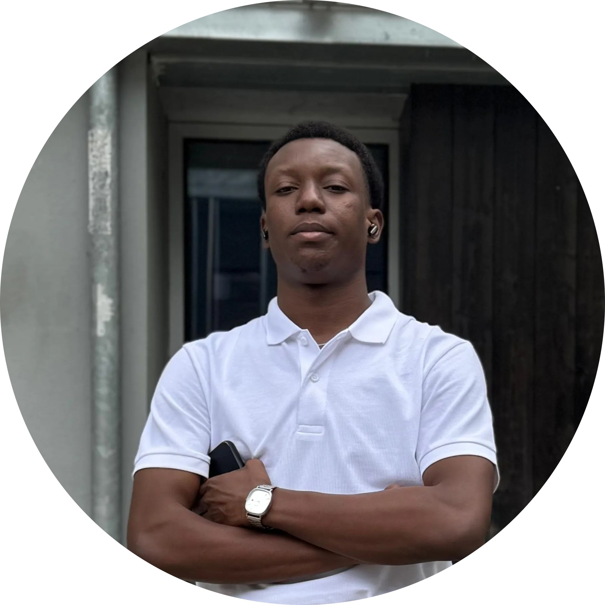
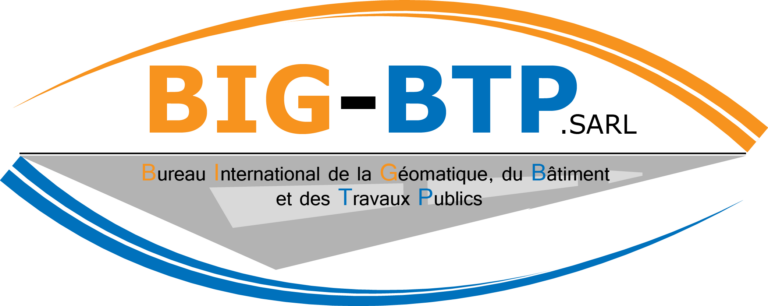
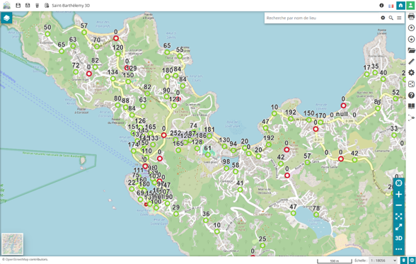
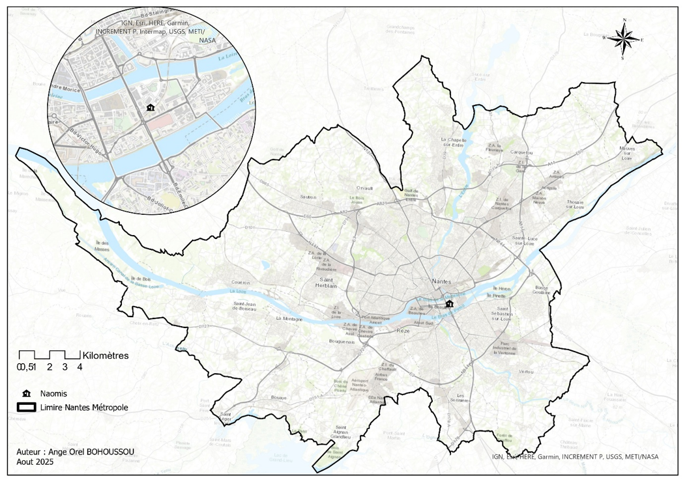

Géomaticien SIG & Data
Du terrain à la donnée exploitable : bases de données, automatisation, pilotage de projet
📍 Recherche un CDI, Nantes et Ouest
Spécialisé dans la structuration et la valorisation de données géospatiales, avec un atout distinctif en SIG 3D, LiDAR et jumeaux numériques. Je transforme des données complexes en outils d'analyse, d'automatisation et d'aide à la décision.

Tout a commencé sur le terrain, à Abidjan — drone en main, GPS à l'épaule. Fraîchement diplômé de l'INPHB en tant que géomètre topographe, j'ai l'occasion de travailler sur des projets d'envergure : relevés LiDAR, bathymétrie et orthophotographies. C'est là que je pilote mon premier drone, et que je comprends le pouvoir de la donnée terrain.
La curiosité me pousse ensuite vers la géomatique. Je rejoins l'IUA d'Abidjan, où mes résultats me valent une sélection pour une double diplomation — un tremplin qui m'ouvre les portes de Nantes Université et d'un Master 2 en Géomatique, Environnement et Risque côtier.
Ce saut entre deux continents, deux systèmes de formation et deux façons de travailler m'a rendu adaptable, autonome et profondément convaincu que la géomatique est un outil stratégique — pas seulement technique. C'est lors de mon stage chez Naomis que tout prend une nouvelle dimension — au sens littéral. Travailler sur un SIG 3D pour le SDIS de Saint-Barthélemy m'a confirmé ma passion pour la modélisation 3D et les jumeaux numériques.
Aujourd'hui, je poursuis le Mastère Spécialisé SILAT d'AgroParisTech pour approfondir mes compétences techniques en SIG et en télédétection, tout en acquérant une vraie dimension managériale pour piloter des projets géomatiques complexes de bout en bout.



Consultez mon parcours complet, mes compétences détaillées et mes réalisations professionnelles en géomatique, données spatiales et pilotage de projet.